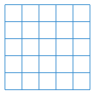
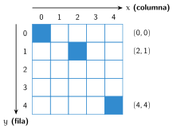
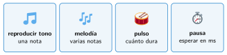

Salidas: la pantalla de LED y el sonido
🤔 Pienso5 min
Qué hago aquí: Piensa un momento y contesta con lo que ya sabes. No pasa nada si no lo sabes: es para empezar.
Colorea las casillas para dibujar una flecha que apunte hacia arriba.

📖 Leo y aprendo15 min
Qué hago aquí: Lee despacio, mira los dibujos y los ejemplos, y quédate con la idea clave del final.
Los actuadores son la salida. La Micro:Bit trae dos: la pantalla de LED y el altavoz.
La pantalla tiene 25 LED: 5 columnas y 5 filas. Cada LED tiene unas coordenadas:
- x es la columna: de 0 a 4, de izquierda a derecha.
- y es la fila: de 0 a 4, de arriba abajo.

El bloque trazar x 2 y 1 enciende el LED (2,1). El bloque apagar x y lo apaga.
Para el sonido, en Música eliges la nota (Do, Re, Mi…) y cuánto dura, en pulsos.

✏️ Hago25 min
Qué hago aquí: Haz las actividades en orden. Empieza siempre por las básicas.
Colorea en la cuadrícula los LED (0,0), (4,0) y (2,2).
Escribe las coordenadas de las cuatro esquinas de la pantalla.
Copia la cuenta atrás en MakeCode. Pruébala en la placa.
Con el bloque mostrar leds, dibuja tu inicial. Después, pon una melodía. ¿Cuál has elegido?
Escribe los bloques trazar x y para dibujar la diagonal de la esquina (0,0) a la esquina (4,4).
🚀 Amplío (si quieres saber más)
Qué hago aquí: ¿Has terminado? Lee la curiosidad o elige el reto. Es voluntario.
Haz una sirena. En para siempre, alterna un tono agudo y uno grave. A la vez, enciende y apaga un ícono.
✅ Compruebo5 min
Qué hago aquí: Contesta sin mirar la ficha y marca cómo lo llevas.